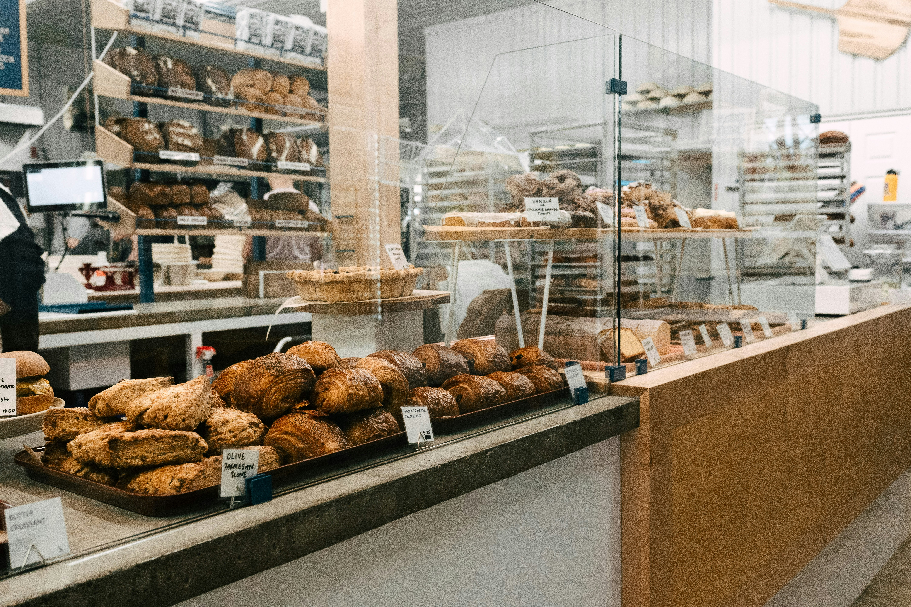

Welcome to Sunrise Bakery
Sunrise Bakery is a family-owned bakery based in Polokwane, serving the community with freshly baked bread, pastries, and cakes every single day. Everything we make is baked from scratch using traditional recipes and quality local ingredients.
Visit Our ShopWhy Choose Us
- Freshly baked every morning
- Locally sourced ingredients
- Custom cakes for any occasion
- Friendly, family-run service
Have a Question or Want to Order?
Send us an enquiry and we will get back to you as soon as possible.
Make an Enquiry